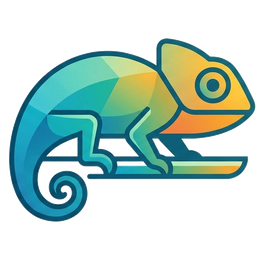

What do you want to do today?
Ask me something small and you'll just get an answer. Give me something bigger — learning a subject, preparing for something — and I'll lay it out and work through it with you.

Ask me something small and you'll just get an answer. Give me something bigger — learning a subject, preparing for something — and I'll lay it out and work through it with you.